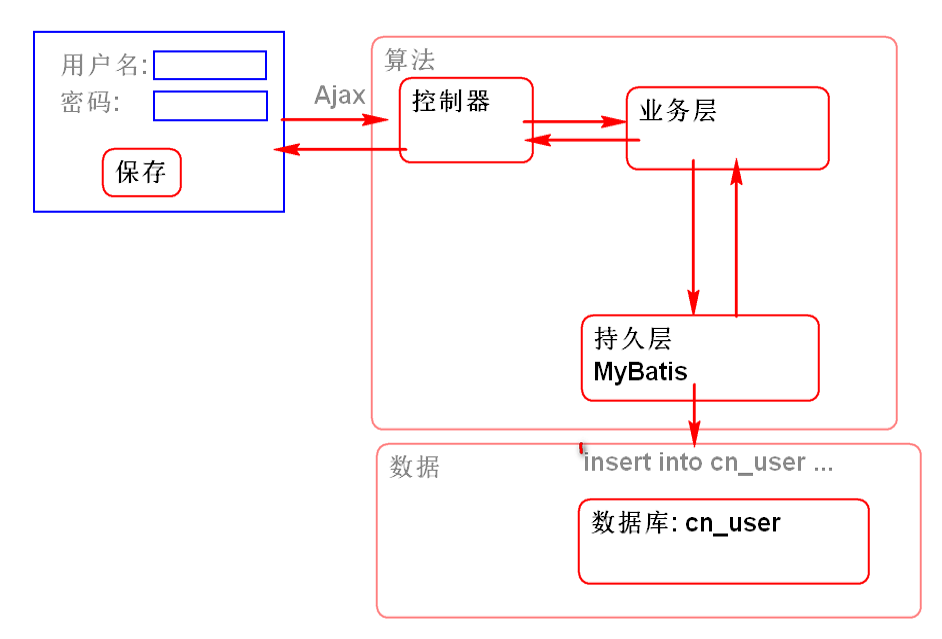
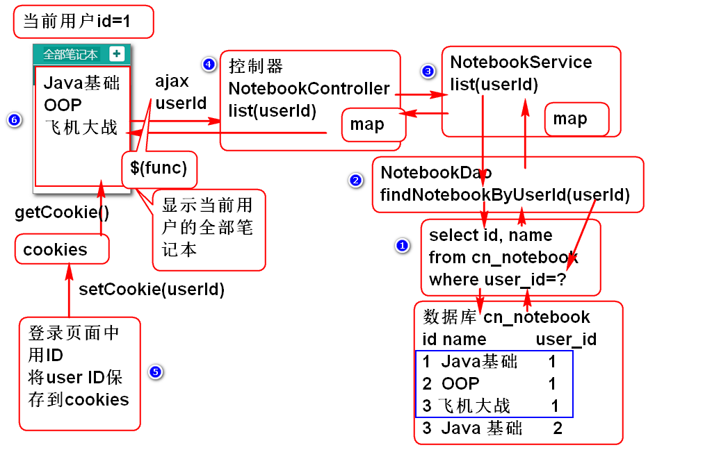
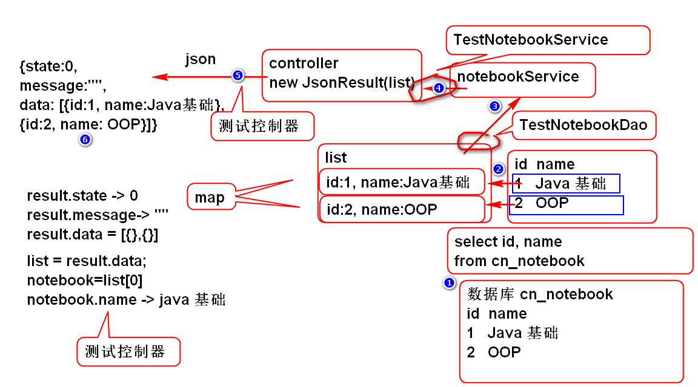

软件功能总体思路:
程序 = 数据结构 + 算法
软件功能实现实例:

注册:
思路分析: 显示当前登录用户的全部笔记本

测试数据操作语句
//利用Eclipse 或者 SQL Developer 测试SQL
select cn_user_id
from cn_notebook;
select
cn_notebook_id as id,
cn_notebook_name as name
from
cn_notebook
where
cn_user_id='333c6d0b-e4a2-4596-9902-a5d98c2f665a';
实现数据持久层
添加数据层接口方法
public interface NotebookDao {
/**
* 根据用户的ID查找这个用户的全部笔记本信息
* @param userId 用户ID
* @return 笔记本信息列表, 每个笔记本信息包含id和name属性
*/
List<Map<String, Object>> findNotebookByUserId(
String userId);
}
添加数据层SQL Mapper
<?xml version="1.0" encoding="UTF-8" ?>
<!DOCTYPE mapper PUBLIC "-//ibatis.apache.org//DTD Mapper 3.0//EN"
"http://ibatis.apache.org/dtd/ibatis-3-mapper.dtd">
<mapper namespace="cn.tedu.cloudnote.dao.NotebookDao">
<select id="findNotebookByUserId"
parameterType="string"
resultType="map">
select
cn_notebook_id as id,
cn_notebook_name as name
from
cn_notebook
where
cn_user_id=#{userId}
</select>
</mapper>
提示: SQL 语句来自步骤1
测试
public class TestCaseBase {
protected ClassPathXmlApplicationContext ctx;
public TestCaseBase() {
super();
}
@Before
public void initCtx() {
ctx=new ClassPathXmlApplicationContext(
"conf/spring-mybatis.xml",
"conf/spring-mvc.xml");
}
}
public class TestNotebookDao extends TestCaseBase {
NotebookDao dao;
@Before
public void initDao(){
dao = ctx.getBean(
"notebookDao", NotebookDao.class);
}
@Test
public void testFindNotebookByUserId(){
String userId="333c6d0b-e4a2-4596-9902-a5d98c2f665a";
List<Map<String, Object>> list=
dao.findNotebookByUserId(userId);
for (Map<String, Object> map : list) {
System.out.println(map);
}
}
}
业务层实现
编写业务层接口
public interface NotebookService {
/**
* 根据用户ID查询笔记本列表
* @param userId 用户ID
* @return 笔记本列表, 每个笔记本信息包含ID和name
* @throws UserNotFoundException 用户ID不存在时候
* 抛出异常
*/
List<Map<String, Object>> listNotebooks(
String userId)
throws UserNotFoundException;
}
实现业务层接口
@Service("notebookService")
public class NotebookServiceImpl
implements NotebookService {
@Resource //注入数据层
private NotebookDao notebookDao;
@Resource
private UserDao userDao;
public List<Map<String, Object>>
listNotebooks(String userId)
throws UserNotFoundException {
if(userId==null || userId.trim().isEmpty()){
throw new UserNotFoundException("ID空");
}
User user = userDao.findUserById(userId);
if(user==null){
throw new UserNotFoundException("ID不存在");
}
return notebookDao.findNotebookByUserId(userId);
}
}
重构 UserDao 添加方法:
User findUserById(String userId);
添加SQL UserMapper.xml:
<select id="findUserById"
parameterType="string"
resultType="cn.tedu.cloudnote.entity.User">
select
cn_user_id as id,
cn_user_name as name,
cn_user_password as password,
cn_user_token as token,
cn_user_nick as nick
from
cn_user
where
cn_user_id=#{userId}
</select>
测试:
public class TestNotebookService
extends TestCaseBase{
NotebookService service;
@Before
public void initService(){
service = ctx.getBean("notebookService",
NotebookService.class);
}
@Test
public void testListNotebooks(){
String userId="333c6d0b-e4a2-4596-9902-a5d98c2f665a";
List<Map<String, Object>> list=
service.listNotebooks(userId);
for (Map<String, Object> map : list) {
System.out.println(map);
}
}
}
控制器实现
添加BaseController 封装异常处理方法:
public abstract class BaseController {
@ExceptionHandler(Exception.class)
@ResponseBody
public JsonResult exceptionHandle(Exception e) {
//参数e就是被捕获到的异常对象
e.printStackTrace();
System.out.println("exceptionHandle");
return new JsonResult(e);
}
}
添加控制器 NotebookController
@Controller
@RequestMapping("/notebook")
public class NotebookController extends BaseController {
@Resource
private NotebookService notebookService;
@RequestMapping("/list.do")
@ResponseBody
public JsonResult list(String userId){
//调用业务层 notebookService
List<Map<String, Object>> list=
notebookService.listNotebooks(userId);
return new JsonResult(list);
}
}
部署测试:
http://localhost:8080/cloudnote/notebook/list.do
http://localhost:8080/cloudnote/notebook/list.do?userId=333c6d0b-e4a2-4596-9902-a5d98c2f665a
重构UserController, 利用异常处理注解处理异常
@Controller
@RequestMapping("/user")
public class UserController extends BaseController {
@Resource
private UserService userService;
@ResponseBody
@RequestMapping("/login.do")
public Object login(String name,String password){
User user
=userService.Login(name, password);
return new JsonResult(user);
}
@ExceptionHandler(NameException.class)
@ResponseBody
public JsonResult handleNameExp(NameException e){
e.printStackTrace();
return new JsonResult(2, e);
}
@ExceptionHandler(PasswordException.class)
@ResponseBody
public JsonResult handlePwdExp(PasswordException e){
e.printStackTrace();
return new JsonResult(3, e);
}
//用户注册
@RequestMapping("/regist.do")
@ResponseBody
public JsonResult regist(String name,String password,
String nick){
User user
=userService.regist(name, password, nick);
return new JsonResult(user);
}
}
整合界面
在edit.html 中添加脚本:
<script type="text/javascript"
src="scripts/cookie_util.js"></script>
<script type="text/javascript"
src="scripts/notebook.js"></script>
添加notebook.js在页面启动时候发起ajax请求.
//sctipts/notebook.js
//网页加载之后执行
$(function(){
//调用方法加载笔记本列表
loadNotebooks();
});
function loadNotebooks(){
//请求 notebook/list.do
//如果成功就将请求结果显示到界面(DOM)上
var url = 'notebook/list.do';
var data = {userId:getCookie('userId')};
console.log(data);
$.getJSON(url, data, function(result){
if(result.state==0){
//console.log(result);
var list = result.data;
showNotebooks(list);
}else{
alert(result.message);
}
});
}
请求成功以后将数据显示到html界面上
function showNotebooks(list){
//找到ul对象
var ul = $('#pc_part_1 .contacts-list');
ul.empty();
//为List中每个笔记本对象生成一个li元素, 添加到ul中
for(var i=0; i<list.length; i++){
var notebook=list[i];
var li = notebookTemplate.replace(
'[name]', notebook.name);
//将生成的li元素添加到页面的ul元素中
ul.append(li);
}
}
var notebookTemplate=
'<li class="online">'+
'<a>'+
'<i class="fa fa-book" title="online" '+
' rel="tooltip-bottom">'+
'</i> [name]</a></li>';
测试: 登录以后会显示笔记本列表
